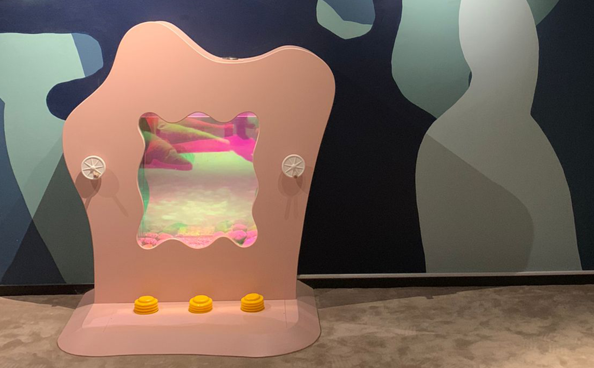
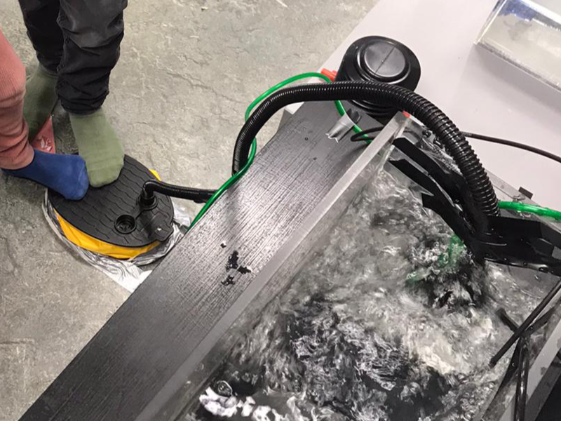
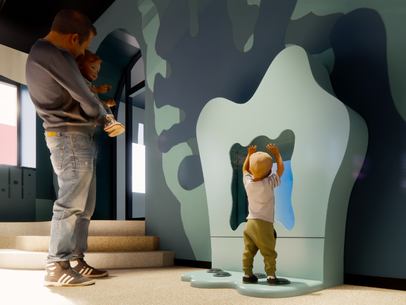
Bubbledrum is a child-centered installation that blends sensory exploration and social play. When toddlers press the bellows or turn the valves, bubbles rise and shift in response, creating clear cause-and-effect feedback. A built-in iridescent reflective underwater tank and moving elements invite curiosity, shared discovery, and active engagement, supporting playful learning in a public space.
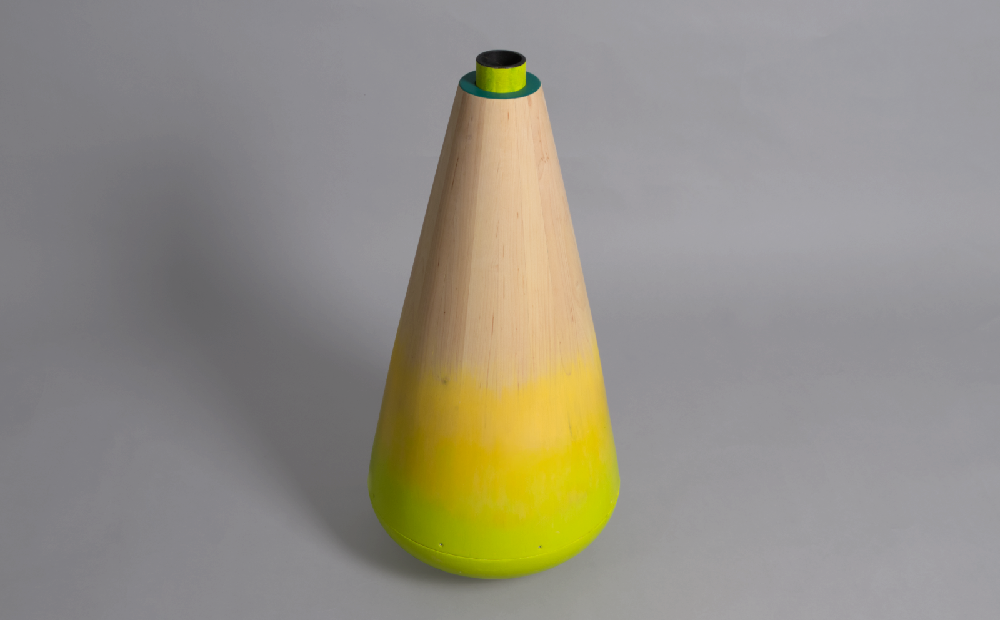
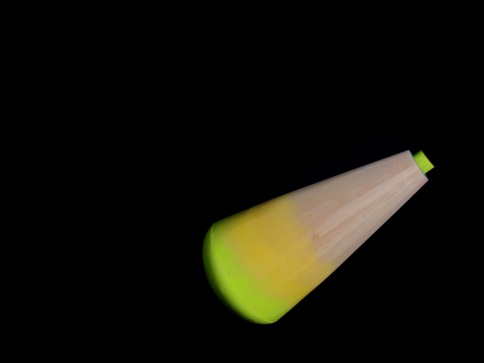
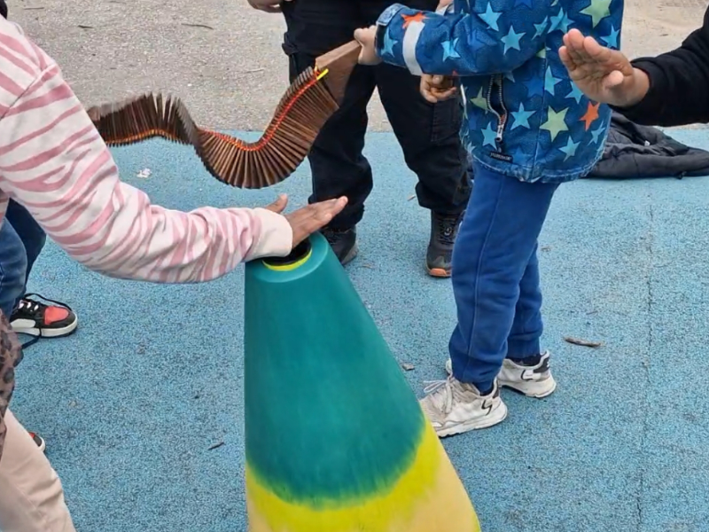
The Angry Bunch is an interactive percussive play object developed to inspire curiosity and active participation among children. Designed to encourage cooperation, synchronization, and imaginative play, it combines dynamic movement, resonant noise, and unpredictability to create rich, shared experiences.
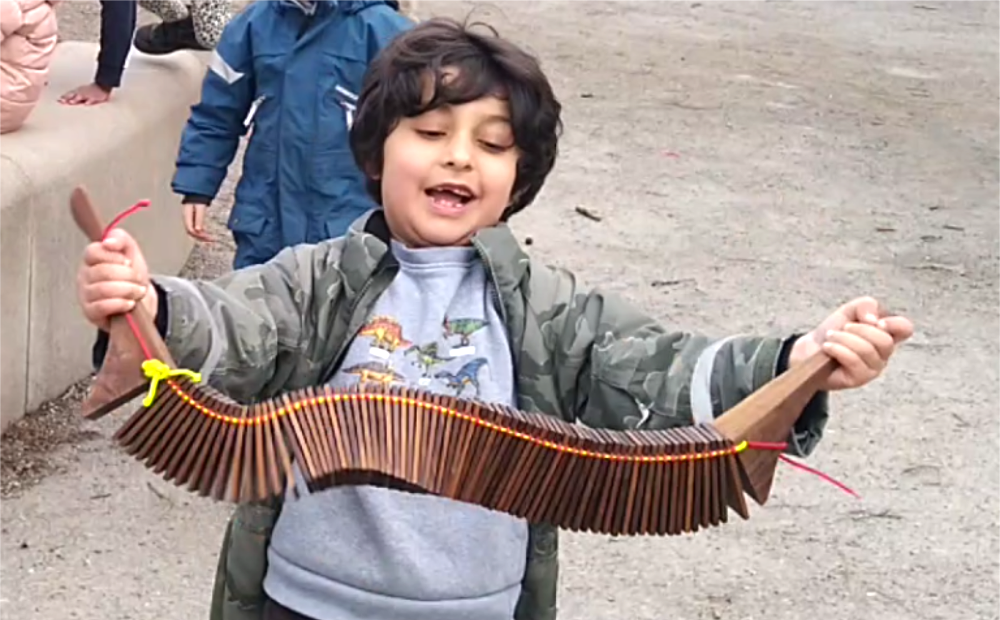

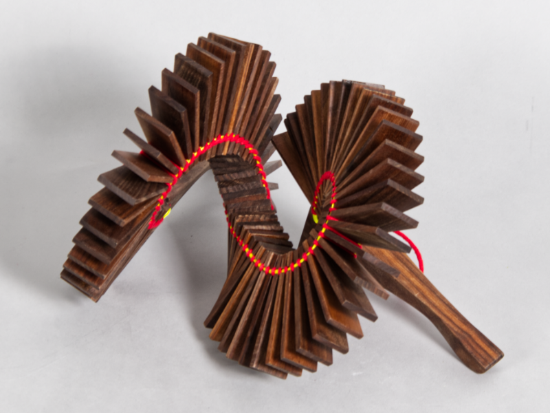
Playful clapper instrument designed for collaborative sound play. Children create rhythmic patterns by shaking and clapping the hinged slats, exploring cause-and-effect through collective movement and sound. The tool supports shared discovery, coordination, and joyful experimentation.
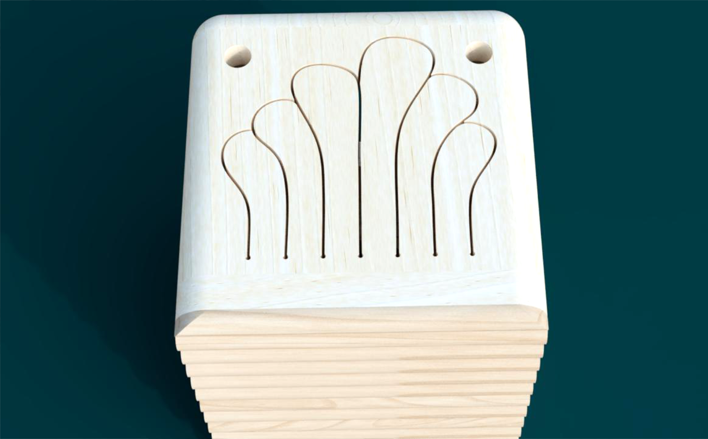
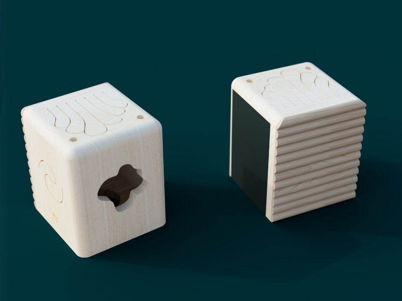
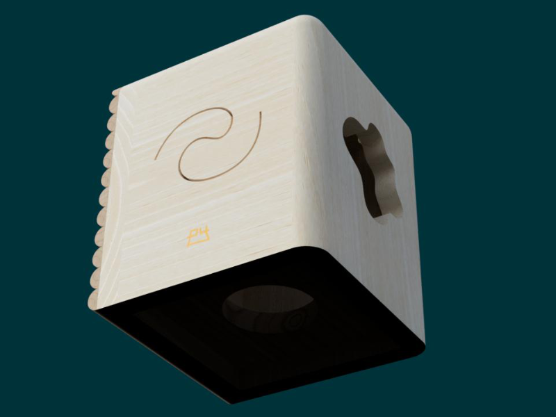
Playful percussion stool combining multiple interactive elements. Children explore slit drums on the top and side, scrape rhythms on the guiro surface, and draw patterns on the integrated blackboard. An internal resonance chamber amplifies the sounds, while rounded edges ensure safe handling and reposition. Designed for multi-sensory engagement, the stool invites drumming, drawing, and movement, transforming everyday play into an open-ended sound experience.
Co-Designing Outdoor Percussions
2021
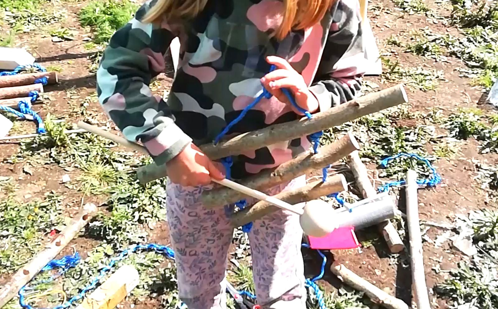
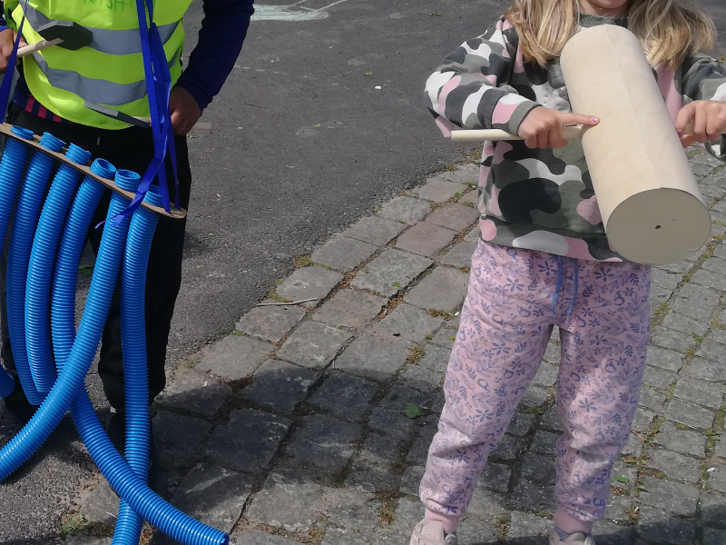
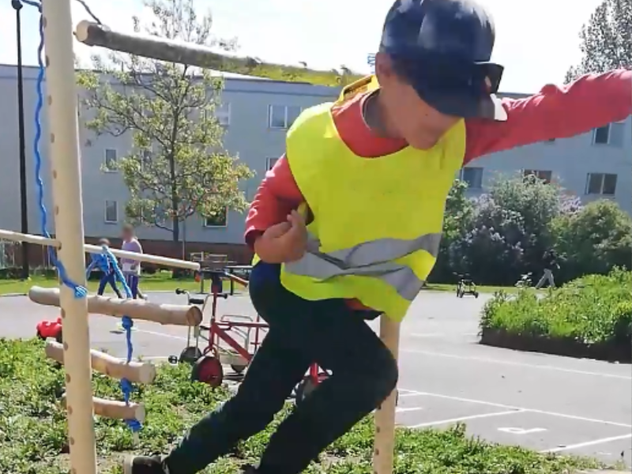
Creating percussion instruments outdoors through co-design sessions with children. Using repurposed materials such as tubes, seeds, and wooden elements, children explored sound-making by building shakers, wind chimes, and simple drums. The process encouraged experimentation, cooperation, and imaginative play, transforming everyday objects into tools for collective music-making. These open-ended sessions highlighted the potential of accessible materials to foster creativity, agency, and social connection.